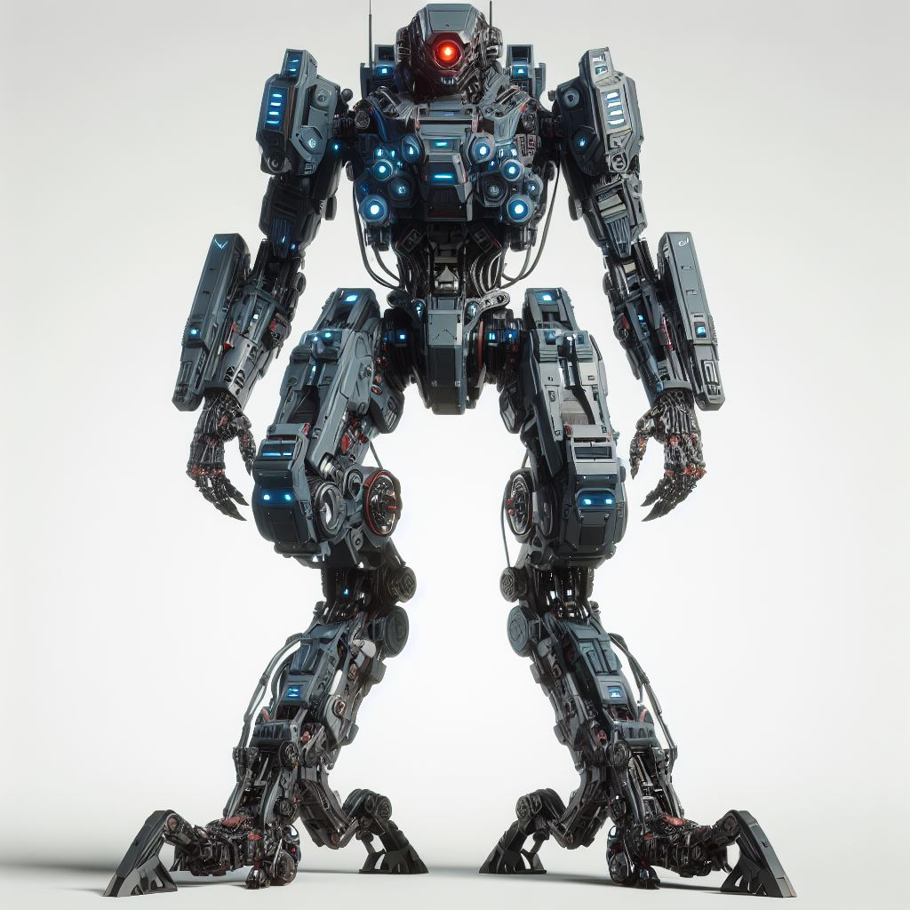
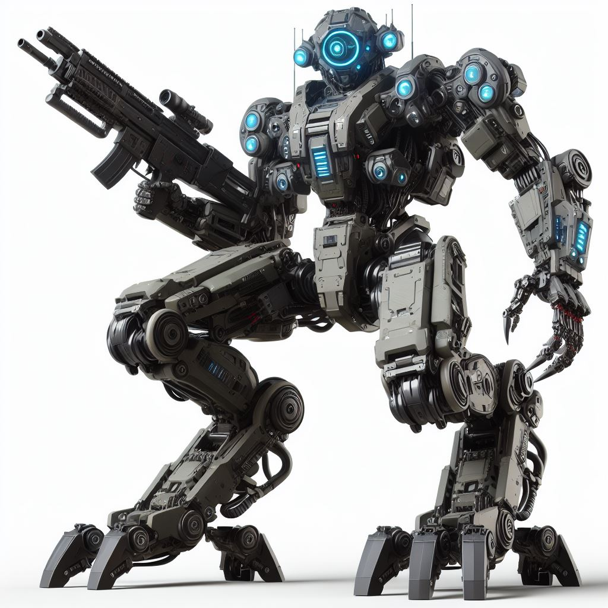

Apexclaw, the prototype unit of the Sòma division
Introducing the illustrious Tactical Division Sóma Anagnórīsīs Zōtikótītas, meticulously crafted by EuroGuardian Defense Solutions in the dawn of 2041.
Revered for their unparalleled mastery in precision sniping and intricate scouting, particularly amidst the unforgiving landscapes of our world, this elite unit finds its stalwart leadership in none other than Apexclaw,
the groundbreaking creation heralding a new era in robotic leadership.
Yet, what truly distinguishes this division from all others is their profound communion with nature.
Each machine within their ranks is imbued with a unique ability, a harmonious dance between technology and the living world.
Through this gift, they possess the extraordinary capability to not only interact with but also revitalize the very essence of their surroundings, transmuting the raw elements of nature into a potent source of specialized energy.
This symbiosis not only amplifies their tactical acumen but also serves as a testament to their reverence for the natural world.
As they traverse the most hostile terrains known to humankind, the Tactical Division Sóma Anagnórīsīs Zōtikótītas stands as a beacon of ingenuity and resilience.
Their unwavering commitment to excellence and their steadfast dedication to the delicate balance between man and nature serve as a testament to their status as pioneers in modern warfare.
With each mission they undertake, they reaffirm their legacy as guardians of peace, defenders of humanity, and stewards of the earth.
Glory to EuroGuardian!

An EHSGPIM (European High Specialisation General Purpose Intelligent Machine) from the Sòma division. Note the uniwue legs and hands of the machine